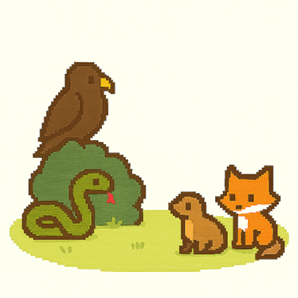

Where Should Your Bunny Live- Inside or Out?
Every bunny deserves a cozy, safe home- but should that be indoors or outdoors? Both options come with their own set of perks and risks. With a little bunny know-how, you can make the choice that keeps your furry friend happiest and healthiest!
Indoor Bunny Benefits
- Safe from predators, parasites, and harsh weather
- Easier to socialize and bond with your rabbit
- Controlled climate reduces risk of heat-related illnesses
- Health issues are spotted earlier with regular observation
- More chances for mental stimulation and family interaction
- Requires bunny-proofing: hide cords, remove toxic plants and small items
Outdoor Risks: Predators
Rabbits outside are vulnerable to predators like feral cats, hawks, raccoons, and even humans. No hutch is completely predator-proof. Even the presence of a predator can trigger panic, which may lead to injury or even heart failure in rabbits.
Outdoor Risks: Exposure to Heat
Heat is a major danger for rabbits. Temps over 80°F can cause heat stroke or death. Fans don't help since rabbits can't sweat. Signs of overheating include drooling, rapid breathing, and lethargy. Immediate vet attention is critical.
Outdoor Risks: Poisonous Plants
Many domestic rabbits lack the instinct to avoid toxic plants. Always check your yard for harmful plants and avoid chemical treatments. If your rabbit eats something dangerous:
- Identify the plant
- Watch for symptoms: drooling, diarrhea, lethargy, breathing trouble
- Call your vet right away
- Bring a sample of the plant if possible
- Your vet may induce vomiting and provide supportive care
- Rabbit-proof your yard to prevent future incidents
Examples of Poisonous Plants
- Nightshade family (tomato, potato, eggplant, bell pepper)
- Hydrangea
- Chrysanthemum
- Lilies
- Onion, garlic, chives
- Poppy
- Hemlock
Outdoor Risks: Pests and Illness
- Greater risk of fleas, ticks, mites, worms, fly strike, West Nile, and more
- Harder to monitor for subtle signs of illness
- Bunnies may hide symptoms until seriously ill
Outdoor Risks: Boredom and Loneliness
Rabbits are social animals. Without regular interaction and stimulation, outdoor bunnies may suffer from depression or boredom. Living indoors allows them to be part of the family.
Summary
While outdoor environments pose many risks, indoor housing offers safety, comfort, and better bonding opportunities. With proper space, enrichment, and bunny-proofing, indoor life gives your rabbit the healthiest, happiest home.